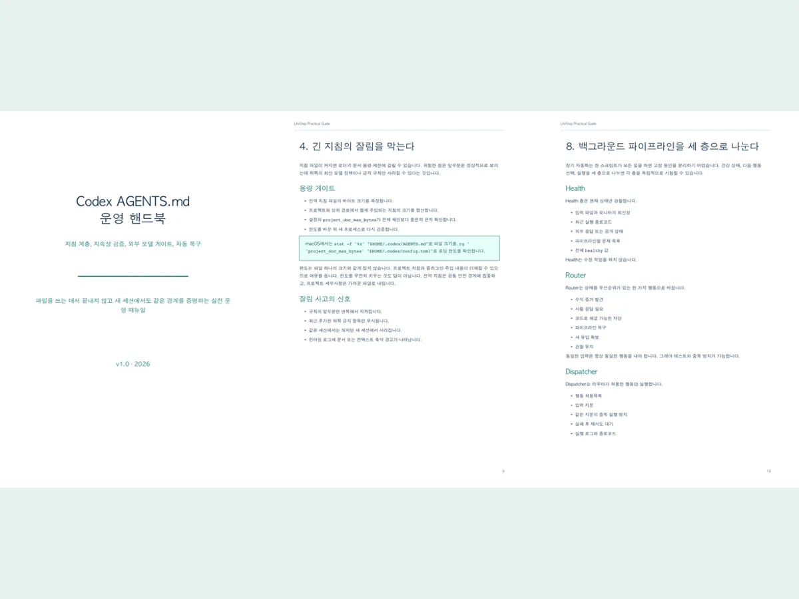

Korean handbook
Codex AGENTS.md 운영 핸드북
지침 계층, 실제 로딩 경로, 32KiB 잘림, 새 프로세스 지속성 테스트, 외부 모델 실패 폐쇄, Health-Router-Dispatcher 복구를 다룹니다.
PDF 16쪽
미리보기
16쪽 한국어 운영 핸드북 + 점검 템플릿 2종
전역 규칙이 실제 런타임에 로드되는지, 긴 지침이 잘리지 않는지, 새 세션에서도 같은 안전 경계와 자동 복구가 재현되는지 증명합니다.
A Korean operations handbook for durable, verifiable Codex instructions.

다운로드 구성
전체 상품은 PDF와 Markdown 템플릿을 하나의 ZIP으로 전달합니다. 공개 저장소에는 앞 6쪽 미리보기만 포함하고 유료 전체 파일은 공개하지 않습니다.
Korean handbook
지침 계층, 실제 로딩 경로, 32KiB 잘림, 새 프로세스 지속성 테스트, 외부 모델 실패 폐쇄, Health-Router-Dispatcher 복구를 다룹니다.
Operations checklist
로딩 경로, 용량, 최신 모델, 자동 복구, 완료와 수익 증거를 배포 전 한 번에 점검하는 Markdown 체크리스트입니다.
Audit evidence
Codex 버전, 유효 홈, override, 로딩 한도와 새 프로세스 검증 결과를 비밀정보 없이 남기는 반복 사용 템플릿입니다.
결제 전에 확인
표지, 실행 경계, 지침 계층, 로딩 경로, 용량 게이트와 새 프로세스 지속성 검증까지 이메일 입력 없이 읽을 수 있습니다.
공개 문의 3단계
문체, 깊이와 다루는 운영 경계가 필요한 내용과 맞는지 확인합니다.
운영체제와 호환성 질문만 남기고 키, 로그 원문과 비공개 코드는 제외합니다.
지원 결제 경로, ZIP 전달 방식과 지원 범위를 확인한 뒤 진행합니다.
출시가 USD 19
호환성과 전달 방식을 확인하기 전에는 결제를 요청하지 않습니다.